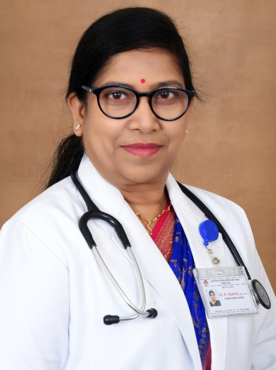

Event Speakers

Nijasri C. Suwanwela
Thailand | Stroke Neurology
Jeyaraj D. Pandian
India | Stroke Neurology
Craig Anderson
Australia | Stroke Neurology
Bernard Yan
Australia | Neurointervention
N. V. Ramani
Singapore | Stroke Neurology
Shinichi Yoshimura
Japan | Neurointervention
Mark Parsons
Australia | Stroke NeurologyGustavo Saposnik
Canada | Stroke NeurologyAndrew M. Demchuk
Canada | Stroke Neurology
Hugh Markus
United Kingdom | Stroke NeurologyValeria Caso
Italy | Stroke Neurology
Zhongrong Miao
China | NeurointerventionAdnan I. Qureshi
USA | Neurointervention
Shinichiro Uchiyama
Japan | Stroke Neurology Terry Hirano.jpg)
Teruyuki Hirano
Japan | Stroke Neurology
Henry Ma
Australia | Stroke NeurologyThanh G Phan
Australia | Stroke Neurology
Anna Ranta
New Zealand | Stroke Neurology
P. Vijaya
India | Stroke Neurology
P. N. Sylaja
India | Stroke Neurology
Mohammed Wasay
Pakistan | Stroke Neurology
Tsong-Hai Lee
Taiwan | Stroke Neurology
Sun Kwon
South Korea | Stroke Neurology
Kay Sin Tan
Malaysia | Stroke NeurologyDeidre De Silva
Singapore | Stroke Neurology
Mahendra Moharir
Canada | Pediatric Stroke NeurologyW. C. Fong
Hong Kong | Stroke NeurologyHui Meng Chang
Singapore | Stroke NeurologyArvind Sharma
India | Stroke Neurology
Epifania Collantes
Philippines | Stroke Neurology
Yohanna Kusuma
Indonesia | Stroke Neurology
Yuji Ueno
Japan | Stroke Neurology
Manabu Shirakawa
Japan | Neurointervention
Ivy Sebastian
India | Stroke NeurologyAndrew Wong
Australia | Stroke NeurologyRichard Webster
Australia | Stroke NeurologyTissa Wijeratne
Australia | Stroke NeurologyRita Krishnamurthy
New Zealand | NeurointerventionYang Jie
China | NeurointerventionYunfeng Zhang
China | Neurointervention
Beom Joon Kim
South Korea | Stroke NeurologySH Li
Hong Kong | Stroke NeurologyRichard Li
Hong Kong | Stroke NeurologyJiann-Shing Jeng
Taiwan | Stroke NeurologyAurauma Chutinet
Thailand | Stroke NeurologyThang Ba Nguyen
Vietnam | Stroke NeurologyDheeraj Khurana
India | Stroke NeurologySubash Kanti Dey
Bangladesh | Stroke Neurology
Padma Gunaratne
Sri Lanka | Stroke Neurology
Gamini Pathirana
Sri Lanka | Stroke Neurology